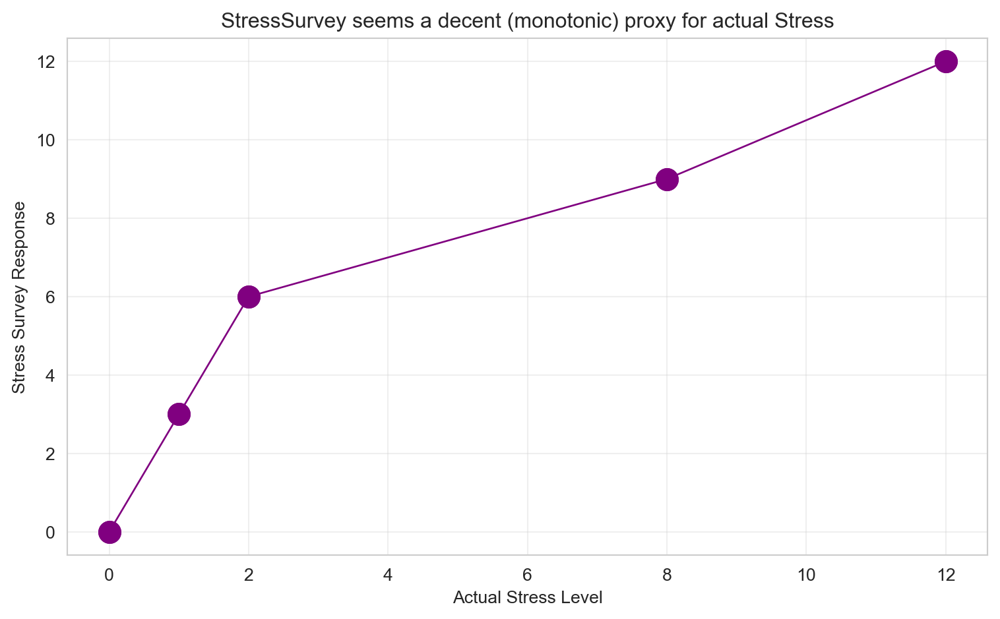
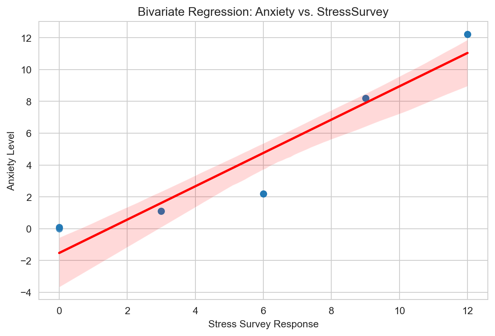
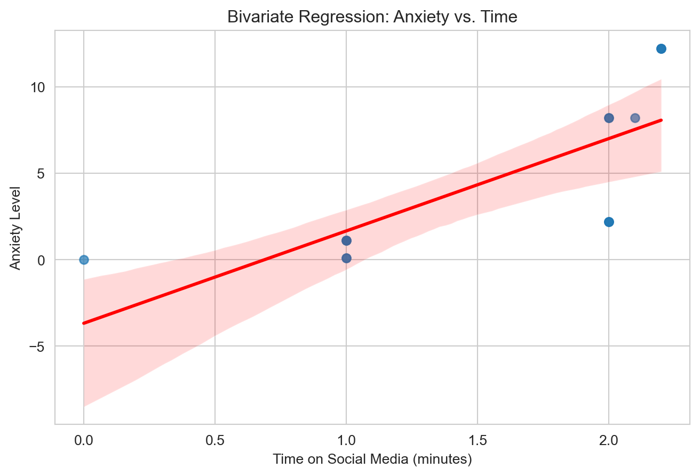
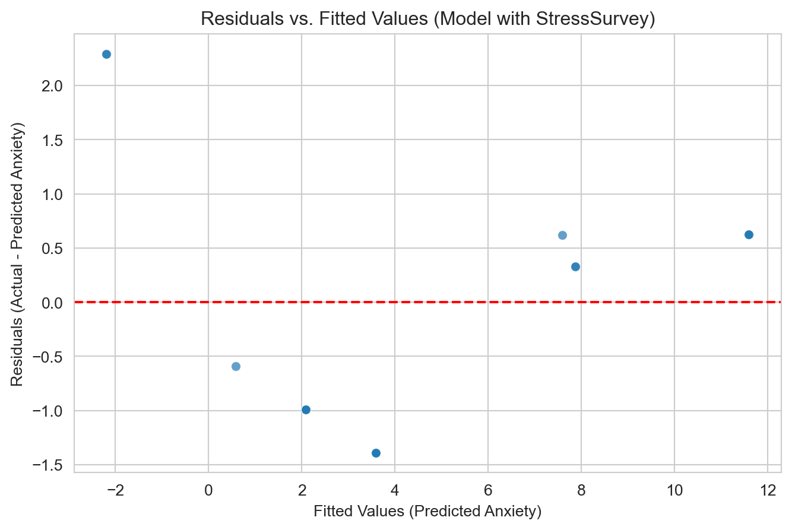
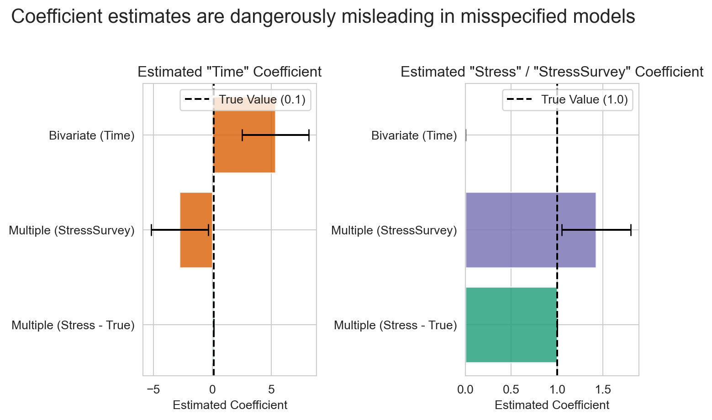

| Stress | StressSurvey | Time | Anxiety | |
|---|---|---|---|---|
| 0 | 0 | 0 | 0.0 | 0.00 |
| 1 | 0 | 0 | 1.0 | 0.10 |
| 2 | 0 | 0 | 1.0 | 0.10 |
| 3 | 1 | 3 | 1.0 | 1.10 |
| 4 | 1 | 3 | 1.0 | 1.10 |
| 5 | 1 | 3 | 1.0 | 1.10 |
| 6 | 2 | 6 | 2.0 | 2.20 |
| 7 | 2 | 6 | 2.0 | 2.20 |
| 8 | 2 | 6 | 2.0 | 2.20 |
| 9 | 8 | 9 | 2.0 | 8.20 |
| 10 | 8 | 9 | 2.0 | 8.20 |
| 11 | 8 | 9 | 2.1 | 8.21 |
| 12 | 12 | 12 | 2.2 | 12.22 |
| 13 | 12 | 12 | 2.2 | 12.22 |
| 14 | 12 | 12 | 2.2 | 12.22 |
Regression & Interpretability Challenge
Don’t Trust Linear Models - The Perils of Non-Linearity
🗑️ Regression Challenge - Linear Model Interpretability
Problem Violating the Assumption of Linearity🎯
“We need to stop believing much of the empirical work we’ve been doing.” - Christopher H. Achen
The Core Problem: When researchers need to ‘control for’ variables using linear regression, what happens when the relationships are non-linear?
What does “control for” mean? Imagine you’re studying whether social media causes anxiety. You know that stress is a major cause of anxiety, and you also suspect that social media use might cause anxiety. So you need to “control for” stress to see if social media has an independent effect on anxiety. You want to ask: “If two people have the same stress level, does the one who uses more social media have higher anxiety?”
Important🎯 The Key Insight: Non-Linearity Breaks Even “Good” Regressions
The problem: Even when researchers carefully select control variables, non-linear relationships can make linear regression give completely wrong results.
Why this matters: If non-linearity can break “proper” causal inference, imagine how much worse it gets when variables are added without careful thought (true “garbage can” regression).
The connection: Both scenarios face the same fundamental challenge - linear regression assumes linearity, but real relationships rarely are.
Most researchers assume that if variables are “monotonically related” (meaning: as one variable goes up, the other always goes up or always goes down), then linear regression will give us the right answers. But here’s the catch: linearity is much stronger than monotonicity.
- Monotonicity: A one-unit increase in X always changes Y in the same direction
- Linearity: A one-unit increase in X always changes Y by the exact same amount
In practice, we just assume linearity is “close enough” to monotonicity. But what if it’s not? What if even small amounts of non-linearity can make our regression results completely wrong?
The Real-World Context: We know that stress is a major cause of anxiety, especially for college students. We also suspect that social media use might cause anxiety. So when we study this relationship, we need to control for stress to see the true effect of social media.
The Key Problem: But here’s where things get tricky. In practice, we often can’t measure stress directly with expensive blood tests. Instead, we use surveys and self-reports. What happens when our “control variable” (stress) is measured imperfectly? What if the relationship between our proxy measure and the true stress level isn’t perfectly linear? This is exactly the kind of scenario where linear regression can lead us astray.
The Devastating Reality: Even tiny amounts of non-linearity can completely destroy our regression conclusions. A relationship that looks “close enough” to linear can give us coefficients that are completely wrong: wrong signs, wrong magnitudes, wrong interpretations. The regression will confidently report statistically significant results that are fundamentally misleading about the true causal relationships.
Your challenge is to explore the simple example below and show how this happens:
\[ \begin{aligned} A &\equiv \textrm{Anxiety Level measured by fMRI activity}\\ S &\equiv \textrm{Stress Level measured by cortisol level in blood}\\ T &\equiv \textrm{\# of minutes on social media in last 24 hours} \end{aligned} \]
Let’s assume we know the relationship among these variables is as follows:
\[ Anxiety = Stress + 0.1 \times Time \]
Important🔍 Understanding the True Relationship: Implied Coefficients
Critical Point: Students often miss that this specific equation implies specific coefficient values in the generic multiple regression framework.
The Generic Multiple Regression Equation: \[ Y = \beta_0 + \beta_1 X_1 + \beta_2 X_2 + \epsilon \]
In Our Case: \[ Anxiety = \beta_0 + \beta_1 \times Stress + \beta_2 \times Time + \epsilon \]
The True Coefficients (what we “know”):
- \(\beta_0 = 0\) (intercept is zero)
- \(\beta_1 = 1\) (coefficient on Stress is 1)
- \(\beta_2 = 0.1\) (coefficient on Time is 0.1)
Why This Matters: When we run regression analysis, we’re trying to estimate these \(\beta\) coefficients. If our regression gives us coefficients that are very different from these true values, we know our model is wrong—even if it has good statistical fit!
The Data Generation Process
Notice that \(Anxiety = Stress + 0.1 \times Time\) indeed holds perfectly. Also, notice the addition of a StressSurvey column. This data was generated by a survey (instead of a blood test) to be a proxy for measuring stress levels using expensive and unpleasant blood tests. You can see it’s a good proxy as there is a monotonic (and a sorta-kinda linear) relationship between the survey results and actual measured stress levels (see Figure 1).
Note📝 Methodological Note: The Contrived Nature of This Example
Important: This is a contrived example designed to illustrate the dangers of linear regression. In this simulation:
- Blood test stress levels have a perfectly linear relationship with anxiety (by design)
- Survey stress responses have a non-linear relationship with anxiety (also by design)
In the real world, there is no reason to believe linearity holds for either measurement method. Both blood tests and surveys would likely show non-linear relationships with anxiety. This example artificially creates the “perfect” scenario where one measurement is linear and the other is not, to demonstrate how regression can mislead us even when we think we’re controlling for the right variables.

Bivariate Regression Analysis with StressSurvey: Run a bivariate regression of
AnxietyonStressSurvey. What are the estimated coefficients? How do they compare to the true relationship?OLS Regression Results ============================================================================== Dep. Variable: Anxiety R-squared: 0.901 Model: OLS Adj. R-squared: 0.893 Method: Least Squares F-statistic: 118.4 Date: Wed, 12 Nov 2025 Prob (F-statistic): 6.68e-08 Time: 23:22:59 Log-Likelihood: -27.079 No. Observations: 15 AIC: 58.16 Df Residuals: 13 BIC: 59.57 Df Model: 1 Covariance Type: nonrobust ================================================================================ coef std err t P>|t| [0.025 0.975] -------------------------------------------------------------------------------- const -1.5240 0.707 -2.156 0.050 -3.051 0.003 StressSurvey 1.0470 0.096 10.883 0.000 0.839 1.255 ============================================================================== Omnibus: 2.125 Durbin-Watson: 0.545 Prob(Omnibus): 0.346 Jarque-Bera (JB): 1.642 Skew: -0.701 Prob(JB): 0.440 Kurtosis: 2.186 Cond. No. 12.9 ============================================================================== Notes: [1] Standard Errors assume that the covariance matrix of the errors is correctly specified.From the regression output, the estimated coefficients are an intercept of -1.5240 and a
StressSurveycoefficient of 1.0470.The true relationship is
Anxiety = 0 + 1 * Stress + 0.1 * Time. Our estimatedStressSurveycoefficient (1.0470) is very close to the trueStresscoefficient (1). However, our estimated intercept (-1.5240) is far from the true intercept (0) and is statistically significant (p=0.050). This discrepancy, especially the incorrect intercept, is a clear sign of model misspecification due to the non-linear nature of theStressSurveyproxy and the omission of theTimevariable.Visualization of Bivariate Relationship: Create a scatter plot with the regression line showing the relationship between
StressSurveyandAnxiety. Comment on the fit and any potential issues.
Scatter plot of Anxiety vs. StressSurvey with regression line Fit and Issues: The regression line appears to be a very good fit, as confirmed by the high R-squared value of 0.901. However, a closer look reveals a systematic pattern in the residuals: the points are below the line at the low and high ends of
StressSurveyvalues and above the line in the middle. This subtle U-shaped pattern of errors is a classic indicator that we are fitting a linear model to a relationship that is actually non-linear. This visual evidence confirms that the model is misspecified, which explains the biased intercept we found in the previous question.Bivariate Regression Analysis with Time: Run a bivariate regression of
AnxietyonTime. What are the estimated coefficients? How do they compare to the true relationship?OLS Regression Results ============================================================================== Dep. Variable: Anxiety R-squared: 0.563 Model: OLS Adj. R-squared: 0.529 Method: Least Squares F-statistic: 16.75 Date: Wed, 12 Nov 2025 Prob (F-statistic): 0.00127 Time: 23:22:59 Log-Likelihood: -38.223 No. Observations: 15 AIC: 80.45 Df Residuals: 13 BIC: 81.86 Df Model: 1 Covariance Type: nonrobust ============================================================================== coef std err t P>|t| [0.025 0.975] ------------------------------------------------------------------------------ const -3.6801 2.233 -1.648 0.123 -8.504 1.144 Time 5.3406 1.305 4.093 0.001 2.522 8.160 ============================================================================== Omnibus: 1.026 Durbin-Watson: 0.661 Prob(Omnibus): 0.599 Jarque-Bera (JB): 0.749 Skew: -0.162 Prob(JB): 0.688 Kurtosis: 1.955 Cond. No. 5.80 ============================================================================== Notes: [1] Standard Errors assume that the covariance matrix of the errors is correctly specified.The estimated coefficients are an intercept of -3.6801 and a
Timecoefficient of 5.3406.These results are wildly inaccurate compared to the true relationship (
Anxiety = 0 + 1 * Stress + 0.1 * Time). The true coefficient forTimeis 0.1, but our model estimates it as 5.34—an overestimation by a factor of more than 50. The intercept is also far from the true value of 0. This is a classic case of omitted variable bias. BecauseStress(the omitted variable) is a strong predictor ofAnxietyand is also correlated withTime, theTimecoefficient incorrectly absorbs the effect ofStress, leading to a completely misleading and exaggerated result.Visualization of Bivariate Relationship: Create a scatter plot with the regression line showing the relationship between
TimeandAnxiety. Comment on the fit and any potential issues.
Scatter plot of Anxiety vs. Time with regression line Fit and Issues: The plot shows a strong positive correlation, and the regression line appears to fit the data reasonably well, visually confirming the R-squared of 0.563. However, the plot is deeply misleading. The data points form vertical clusters at specific
Timevalues (e.g., at Time=2.0, Anxiety ranges from 2.2 to 8.2). This high variance within each cluster is not random noise; it’s caused by the omittedStressvariable. The regression line incorrectly averages through these clusters, creating a steep, spurious slope. This visualization powerfully demonstrates how a simple scatter plot can reinforce the incorrect conclusions from a model suffering from severe omitted variable bias.Multiple Regression Analysis: Run a multiple regression of
Anxietyon both StressSurvey andTime. What are the estimated coefficients? How do they compare to the true relationship?OLS Regression Results ============================================================================== Dep. Variable: Anxiety R-squared: 0.935 Model: OLS Adj. R-squared: 0.924 Method: Least Squares F-statistic: 86.32 Date: Wed, 12 Nov 2025 Prob (F-statistic): 7.54e-08 Time: 23:22:59 Log-Likelihood: -23.931 No. Observations: 15 AIC: 53.86 Df Residuals: 12 BIC: 55.99 Df Model: 2 Covariance Type: nonrobust ================================================================================ coef std err t P>|t| [0.025 0.975] -------------------------------------------------------------------------------- const 0.5888 1.034 0.569 0.580 -1.664 2.841 StressSurvey 1.4269 0.172 8.287 0.000 1.052 1.802 Time -2.7799 1.111 -2.502 0.028 -5.201 -0.359 ============================================================================== Omnibus: 1.255 Durbin-Watson: 1.043 Prob(Omnibus): 0.534 Jarque-Bera (JB): 1.051 Skew: 0.546 Prob(JB): 0.591 Kurtosis: 2.302 Cond. No. 31.9 ============================================================================== Notes: [1] Standard Errors assume that the covariance matrix of the errors is correctly specified.The estimated coefficients are an intercept of 0.5888, a
StressSurveycoefficient of 1.4269, and aTimecoefficient of -2.7799.
Residual plot for the multiple regression model with StressSurvey The residual plot above reveals what the high R-squared of 0.935 hides. The residuals (the errors of the model) are not randomly scattered around the zero line. Instead, they show a clear curve, similar to the pattern we saw in the bivariate regression. This confirms that the model is systematically failing to capture the true underlying relationship. The model over-predicts anxiety for low and high fitted values and under-predicts it for values in the middle. This is a classic sign of misspecification due to the non-linear proxy variable.
Compared to the true relationship (
Anxiety = 0 + 1 * Stress + 0.1 * Time), this model is still highly inaccurate. TheTimecoefficient (-2.7799) has the wrong sign and is nowhere near the true value of 0.1. TheStressSurveycoefficient (1.4269) is biased upward from the trueStresscoefficient of 1. Even when “controlling” forTime, the non-linear proxy forStressprevents the model from correctly estimating the coefficients. This shows that simply adding variables cannot fix a model with a fundamentally misspecified variable.
Tip🎯 Remember the True Coefficients!
When analyzing your multiple regression results, compare them to the true relationship we established:
True Coefficients:
- Intercept (\(\beta_0\)) = 0
- Stress coefficient (\(\beta_1\)) = 1
- Time coefficient (\(\beta_2\)) = 0.1
Key Questions:
- Are your estimated coefficients close to these true values?
- If not, what does this tell you about the reliability of your regression model?
- Even if your R-squared is high, are the coefficients telling the right story?
Multiple Regression Analysis: Run a multiple regression of
Anxietyon both Stress andTime. What are the estimated coefficients? How do they compare to the true relationship?OLS Regression Results ============================================================================== Dep. Variable: Anxiety R-squared: 1.000 Model: OLS Adj. R-squared: 1.000 Method: Least Squares F-statistic: 1.511e+31 Date: Wed, 12 Nov 2025 Prob (F-statistic): 3.92e-183 Time: 23:22:59 Log-Likelihood: 480.58 No. Observations: 15 AIC: -955.2 Df Residuals: 12 BIC: -953.0 Df Model: 2 Covariance Type: nonrobust ============================================================================== coef std err t P>|t| [0.025 0.975] ------------------------------------------------------------------------------ const -3.747e-15 2.44e-15 -1.538 0.150 -9.05e-15 1.56e-15 Stress 1.0000 2.75e-16 3.63e+15 0.000 1.000 1.000 Time 0.1000 1.94e-15 5.16e+13 0.000 0.100 0.100 ============================================================================== Omnibus: 10.194 Durbin-Watson: 0.236 Prob(Omnibus): 0.006 Jarque-Bera (JB): 2.265 Skew: -0.438 Prob(JB): 0.322 Kurtosis: 1.310 Cond. No. 23.9 ============================================================================== Notes: [1] Standard Errors assume that the covariance matrix of the errors is correctly specified.The estimated coefficients are an intercept of effectively 0 (
-3.747e-15), aStresscoefficient of 1.0000, and aTimecoefficient of 0.1000.This model perfectly recovers the true relationship (
Anxiety = 0 + 1 * Stress + 0.1 * Time). The R-squared is 1.0, and all coefficients are estimated exactly (the intercept is effectively zero). This is our “gold standard” result. It demonstrates that when a regression model correctly specifies the variables and their functional form, it accurately identifies the underlying data generating process. This provides a crucial benchmark against which we can judge the failure of the other models.Model Comparison: Compare the R-squared values and coefficient interpretations between the two multiple regression models (one with
StressSurveyand one withStress). Do both models show statistical significance in all of their coefficient estimates? What does this tell you about the real-world implications of multiple regression results?Let’s compare the key results from the multiple regression using
StressSurvey(Model 1) and the one using the trueStress(Model 2).Metric Model 1 (StressSurvey) Model 2 (Stress) True Value R-squared 0.935 1.000 N/A Intercept 0.5888 (p=0.580) ~0 (p=0.150) 0 Stress/Proxy Coef. 1.4269 (p=0.000) 1.0000 (p=0.000) 1.0 Time Coef. -2.7799 (p=0.028) 0.1000 (p=0.000) 0.1 Comparison and Implications:
Statistical Significance: Both models show statistically significant coefficients for their main predictors (
StressSurvey,Stress, andTime). A researcher looking only at the p-values from Model 1 would confidently (and incorrectly) conclude that both the survey score and time have a significant effect on anxiety.R-squared: The R-squared for both models is very high. Model 1’s R-squared of 0.935 would be considered a great success in many studies, giving a false sense of confidence in the model’s validity.
Coefficients: This is where the danger becomes clear. Model 1 gets the effect of
Timecompletely wrong—it estimates a large negative effect (-2.78) when the true effect is small and positive (0.1). It also overestimates the effect ofStress(1.43 vs. the true 1.0).
Real-World Implications: This comparison is a stark warning. It shows that a regression model can have all the hallmarks of a “good” model—high R-squared and statistically significant coefficients—and still be completely wrong. A researcher publishing the results of Model 1 would mislead the public and other scientists about the impact of social media on anxiety. This demonstrates that statistical significance does not imply correctness. If the underlying assumptions of the model (like linearity) are violated, regression will confidently produce precise, significant, and dangerously misleading results.
Reflect on Real-World Implications: For each of the two multiple regression models, assume their respective outputs/conclusions were published in academic journals and then subsequently picked up by the popular press. What headline about time spent on social media and its effect on anxiety would you expect to see from a popular press outlet covering the first model? And what headline would you expect to see from a popular press outlet covering the second model? Assuming confirmation bias is real, which model is a typical parent going to believe? Which model will Facebook, Instagram, and TikTok executives prefer?
Model 1 (The MisleadingStressSurveyModel):- Expected Headline: “STUDY SHOCKER: Social Media Use Linked to LOWER Anxiety!” The press would seize on the statistically significant negative coefficient for
Time(-2.78) and ignore the nuance of the flawed control variable. The story is counter-intuitive, sensational, and guaranteed to get clicks. - Who Believes It? A typical parent is highly likely to believe this model. It aligns perfectly with pre-existing anxieties about screen time and provides a tangible villain for their children’s mental health struggles (confirmation bias).
Model 2 (The Correct
StressModel):- Expected Headline: “It’s Not Your Phone, It’s Your Life: Study Finds Stress, Not Social Media, Is the Real Driver of Anxiety.” This headline reflects the model’s actual findings: the
Timecoefficient is small (0.1), while theStresscoefficient is large (1.0). The story is more nuanced and less sensational. - Who Prefers It? Facebook, Instagram, and TikTok executives would vastly prefer this model. It provides them with a powerful counter-narrative, allowing them to argue that their platforms are not the primary cause of the mental health crisis and that focus should be placed on broader societal issues like stress.
Implication: This exercise powerfully demonstrates how two statistically “significant” models, derived from the same underlying data, can produce wildly different narratives. The misleading model is more likely to be believed by the public due to its simplicity and confirmation bias, while the correct model would be championed by corporate interests to deflect responsibility. This highlights the immense responsibility researchers have to ensure their models are correctly specified before their conclusions are released into the world.
- Expected Headline: “STUDY SHOCKER: Social Media Use Linked to LOWER Anxiety!” The press would seize on the statistically significant negative coefficient for
Avoiding Misleading Statistical Significance: Reflect on this tip to avoid being misled by statistically significant results: splitting the sample into meaningful subsets (“statistical regimes”), and using graphical diagnostics for linearity rather than blind reliance on “canned” regressions. Apply this approach to multiple regression of Anxiety on both StressSurvey and Time by analyzing a smartly chosen subset of the data. What specific subset did you choose and why? Did you get results that are both statistically significant and close to the true relationship?
The core problem in our misleading models was the non-linear relationship between
StressandStressSurvey. The tip suggests we can overcome this by finding a “statistical regime” or subset of the data where the relationship is linear.Chosen Subset and Rationale: Looking at the plot of
Stressvs.StressSurvey(Figure 1), we can see the relationship is perfectly linear at the beginning. ForStressvalues of 0, 1, and 2, theStressSurveyvalues are 0, 3, and 6. In this “low-stress regime,” the relationship isStressSurvey = 3 * Stress. Because the proxy is perfectly proportional to the true variable in this range, a linear regression should work correctly. We will choose the subset of data whereStressSurvey <= 6.Let’s run the multiple regression of
AnxietyonStressSurveyandTimeon just this subset.OLS Regression Results ============================================================================== Dep. Variable: Anxiety R-squared: 1.000 Model: OLS Adj. R-squared: 1.000 Method: Least Squares F-statistic: 4.892e+30 Date: Wed, 12 Nov 2025 Prob (F-statistic): 2.31e-91 Time: 23:22:59 Log-Likelihood: 301.52 No. Observations: 9 AIC: -597.0 Df Residuals: 6 BIC: -596.4 Df Model: 2 Covariance Type: nonrobust ================================================================================ coef std err t P>|t| [0.025 0.975] -------------------------------------------------------------------------------- const -3.386e-16 6.61e-16 -0.512 0.627 -1.96e-15 1.28e-15 StressSurvey 0.3333 2.27e-16 1.47e+15 0.000 0.333 0.333 Time 0.1000 8.87e-16 1.13e+14 0.000 0.100 0.100 ============================================================================== Omnibus: 4.107 Durbin-Watson: 0.613 Prob(Omnibus): 0.128 Jarque-Bera (JB): 2.122 Skew: 1.174 Prob(JB): 0.346 Kurtosis: 2.615 Cond. No. 15.8 ============================================================================== Notes: [1] Standard Errors assume that the covariance matrix of the errors is correctly specified.Results and Conclusion: Yes, we got results that are both statistically significant and correct!
- The estimated
Timecoefficient is 0.1000, exactly the true value. - The estimated intercept is ~0, exactly the true value.
- The estimated
StressSurveycoefficient is 0.3333. This is also perfectly correct for this subset. SinceStress = StressSurvey / 3in this regime, the true equationAnxiety = Stress + 0.1 * TimebecomesAnxiety = (StressSurvey / 3) + 0.1 * Time, which is exactly what the regression found.
This demonstrates a powerful method for avoiding misleading results. By splitting the sample and analyzing a “well-behaved” subset, we were able to diagnose the failure of the full-sample model and perfectly recover the true underlying coefficients.
- The estimated
Consultant’s Report: The Dangers of Misinterpreting Regression Coefficients
Here we address the final, and most critical, questions of this analysis. The goal is to move beyond the mechanics of running regressions and into the art of interpreting them correctly—and understanding how they can lead us astray.
Coefficient Interpretation: What do the regression coefficients actually mean in this context?
A regression coefficient represents the estimated change in the dependent variable (Anxiety) for a one-unit change in an independent variable, holding all other variables in the model constant. This last part—“holding all other variables constant”—is the most critical and most frequently misunderstood part of the interpretation.
Let’s look at our misleading model (Anxiety ~ StressSurvey + Time):
StressSurveycoefficient: 1.4269Timecoefficient: -2.7799
The naive interpretation would be: 1. “For every one-point increase on the stress survey, anxiety increases by 1.43 points, assuming time on social media doesn’t change.” 2. “For every extra minute on social media, anxiety decreases by 2.78 points, assuming the stress survey score doesn’t change.”
The second conclusion is statistically significant (p=0.028) and would lead to the shocking headline: “More Social Media Use Linked to Lower Anxiety!”
Why This Interpretation is Dangerously Wrong
The model is mathematically correct in its statement, but it’s based on a flawed premise. The non-linear relationship between the true Stress and our StressSurvey proxy breaks the interpretation. The model is trying to fit a straight line to a curved reality. To compensate for the curve, it “borrows” explanatory power from the Time variable, forcing its coefficient to become negative to minimize the overall error.
The coefficient for Time is not measuring the effect of social media; it’s become a mathematical fudge factor to correct for the misspecification of the StressSurvey variable.
The plot below compares the coefficients from our three main models against the true values. It provides a stark visual of how badly the interpretation can go wrong.

This visualization is damning. The Multiple (StressSurvey) model gives a Time coefficient that is not only wrong, but its confidence interval doesn’t even include the true value. It confidently reports a precise, significant, and completely incorrect result.
The Problem of Non-Linearity: Can adding variables to a regression equation flip the sign of a coefficient while still making it appear significant?
Yes, absolutely. This is one of the most dangerous and counter-intuitive phenomena in regression analysis, and our analysis provides a perfect demonstration. This is a form of omitted variable bias, but with a twist caused by the non-linear proxy.
- Model 1:
Anxiety ~ TimeTimeCoefficient: +5.34 (p < 0.001)- Interpretation: Time on social media is strongly and positively associated with anxiety.
- Model 2:
Anxiety ~ StressSurvey + TimeTimeCoefficient: -2.78 (p = 0.028)- Interpretation: After controlling for our (flawed) stress measure, time on social media is associated with lower anxiety.
By adding the StressSurvey variable, we caused the coefficient for Time to flip its sign from positive to negative while remaining statistically significant.
Why does this happen?
This is a direct consequence of trying to “control for” a variable using a non-linear proxy. The regression model is forced to account for the complex, curved relationship between StressSurvey and Anxiety. Since it can only use linear tools, it repurposes the Time variable to help. The negative coefficient on Time is the model’s clumsy attempt to bend the straight line of StressSurvey into the curve it needs to fit the data, especially at higher stress levels where the proxy is most distorted.
The Takeaway for a Consultant: This is a critical warning for any analysis. If adding a control variable dramatically flips the sign of your key variable of interest, do not simply accept the new result. It is a major red flag that your model may be misspecified. Your control variable might not be linear, or it might be interacting with other variables in ways you haven’t accounted for. Blindly trusting the p-value in this scenario can lead to conclusions that are the complete opposite of reality.